Page 1
Roles, Access, And MFA
Use this guide as the operating checklist for moving from project creation through assessment, client evidence collection, POA&M, and ATO/iATO reporting.
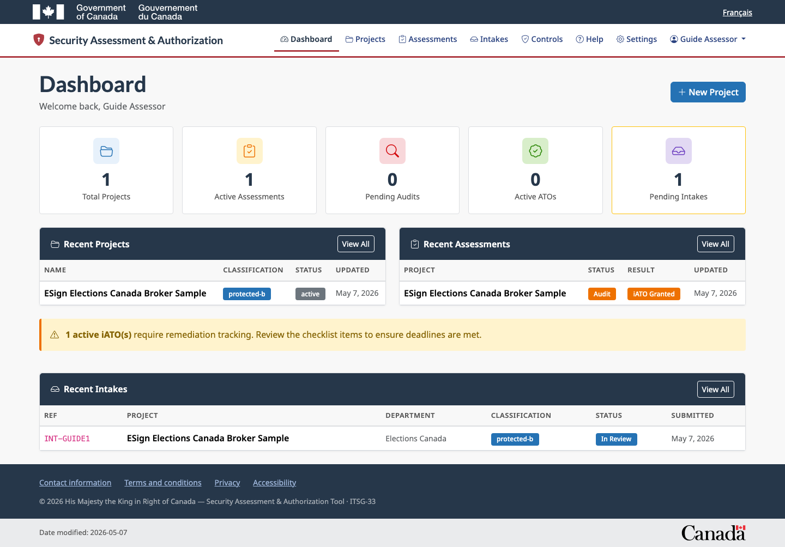
Assessor dashboard with active projects, intakes, and authorization work.
Assessor/adminCreates projects, reviews intakes, tailors controls, assigns work, manages POA&M, creates ATO/iATO records, and exports reports.
ClientSubmits intakes, responds to assigned assessments, uploads evidence, and submits evidence packages.
Normal users should use TOTP MFA. Passkeys are optional after TOTP is configured, and TOTP remains available as a fallback. Break-glass accounts are emergency-only.
Page 2
Create A Project And Linked Intake
A new project starts with intake-quality information. The project save creates or updates the linked intake record in the background.
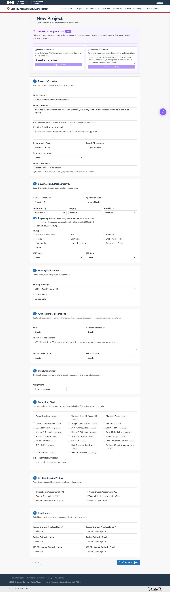
New project form with document upload, description, categorization, contacts, and assignment fields.
- Sign in at
/admin/login.
- Open Projects and select New Project.
- Upload a SADD or paste a plain-language project description.
- Review proposed field values before applying them.
- Complete classification, hosting, technologies, privacy, contacts, and notes.
- Optionally assign the intake to an existing user or invite a new user.
- Save the project and confirm the project dashboard shows a linked intake reference.
Page 3
Use The Project Dashboard
The project dashboard is the assessor workbench for documentation, assignments, assessments, reports, branding, ATO/iATO records, and POA&M.

Project dashboard with populated sample data, assignments, intake, documents, and reporting panels.
- Confirm classification, hosting, technology stack, contacts, and project status.
- Open or review the linked intake.
- Upload documentation for AI analysis and traceability.
- Create assessments and review assessment status.
- Configure organization branding for reports.
- Create ATO/iATO records and export project reports.
Page 4
Upload And Use Project Documentation
Uploaded project documents are stored with the project and can be used later for AI-assisted control selection, evidence guidance, report references, and audit traceability.

Documentation table with uploaded SADD and data-flow evidence files.
- Open the project dashboard.
- Upload SADDs, diagrams, security plans, data flows, privacy documents, or prior assessment packages.
- Confirm each file appears with type, upload date, uploader, size, project, and actions.
- Download to verify the stored file.
- Use the AI action when a document should support control selection or evidence guidance.
- Delete only the project document reference when it should no longer be used.
Page 5
Create And Tailor An Assessment
The assessor remains in control of the final tailored control set. AI can suggest, but the assessor approves, edits, removes, and saves.
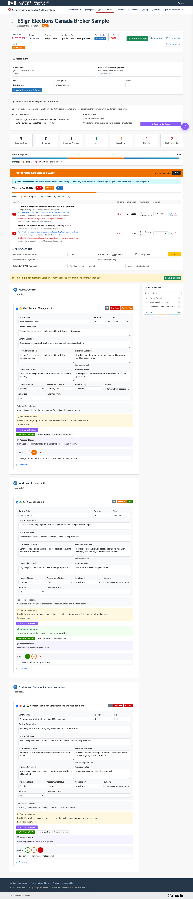
Tailoring mode with editable control title, description, guidance, evidence, notes, status, applicability, inheritance, and risk.
- From the project dashboard, select New Assessment.
- Review suggested controls and create the assessment.
- Open the assessment and select Tailor.
- Edit control title, description, control guidance, evidence guidance, evidence collected, assessor notes, audit comments, status, applicability, priority, and risk.
- Remove non-applicable controls.
- Save tailoring changes and refresh to confirm persistence.
Page 6
Generate AI Evidence Guidance
Use AI output as assessor-reviewed draft content. Do not send or report generated guidance until it has been reviewed.
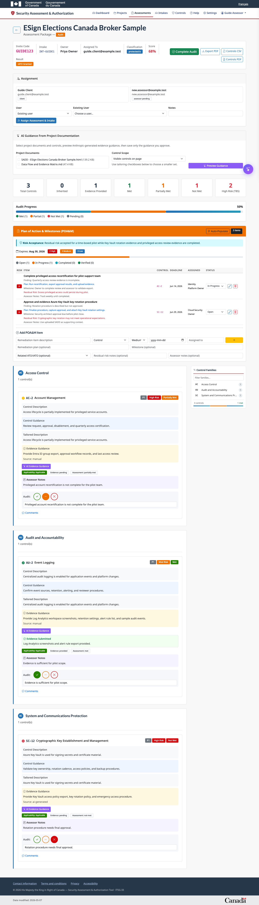
Assessment detail page showing assignment, documents, AI guidance area, and control status.
- Upload project documentation first.
- Open the assessment.
- Select one or more project documents.
- Select visible controls or checked controls.
- Preview generated guidance.
- Edit the preview if needed.
- Save only guidance that the assessor approves.
Existing assessor-entered notes, evidence, or guidance should not be silently overwritten. AI-generated guidance is tracked separately from manual or edited content.
Page 7
Assign Existing Users
Use existing-user assignment when the client or assessor already has an active account.
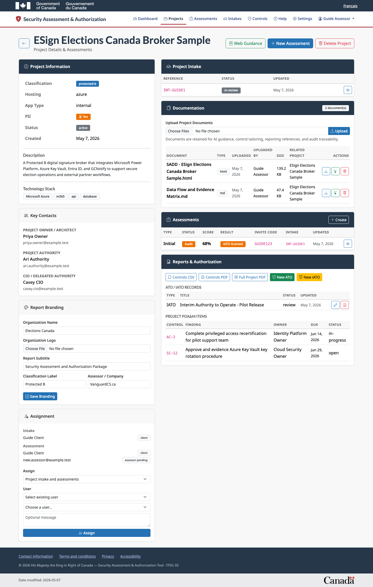
Project assignment form targeting intake and assessments for an existing user.
- Open the project or assessment.
- Choose the target intake, assessment, or all linked work.
- Select Existing user.
- Choose a client or assessor from the list.
- Add notes if useful.
- Assign and confirm the assignment appears in the assignment list.
Page 8
Invite New Clients Or Assessors
Use invitation assignment when the person does not yet have an account.
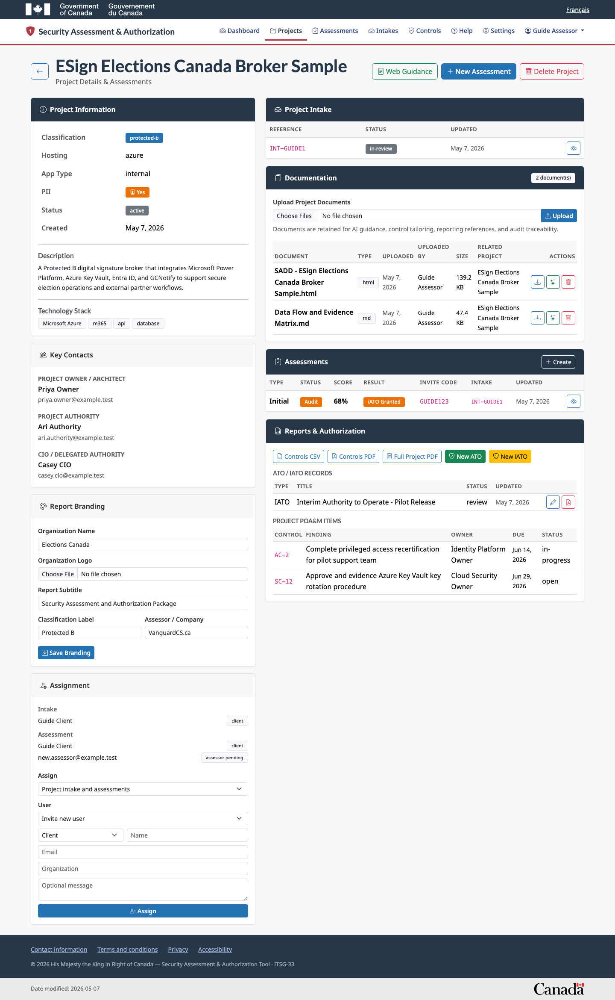
Project-level invitation workflow for a new client or assessor.
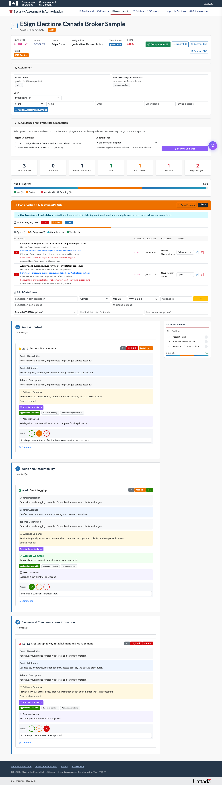
Assessment-level invitation workflow for a new user.
- Set assignment mode to Invite new user.
- Choose client or assessor.
- Enter name, email, organization, and message.
- Assign the work.
- If email is not configured, copy the invitation code from the success message and share it through an approved channel.
- Confirm the pending invite appears in the assignment list.
Page 9
Client Intake Workflow
Clients can provide project information and supporting documents without admin privileges.
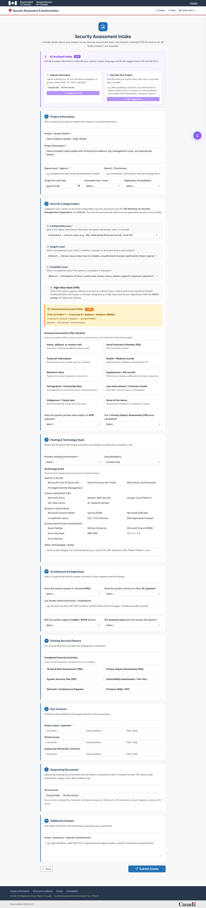
Client intake form with project description, categorization, hosting, privacy, and contacts.
- Sign in at
/client/login.
- Complete TOTP verification.
- Open
/intake.
- Describe the project purpose, users, data, integrations, hosting, and security dependencies.
- Upload supporting documents.
- Submit the intake and keep the reference code.
Page 10
Client Evidence Workflow
Clients respond to assigned assessment requests by providing control-specific evidence.
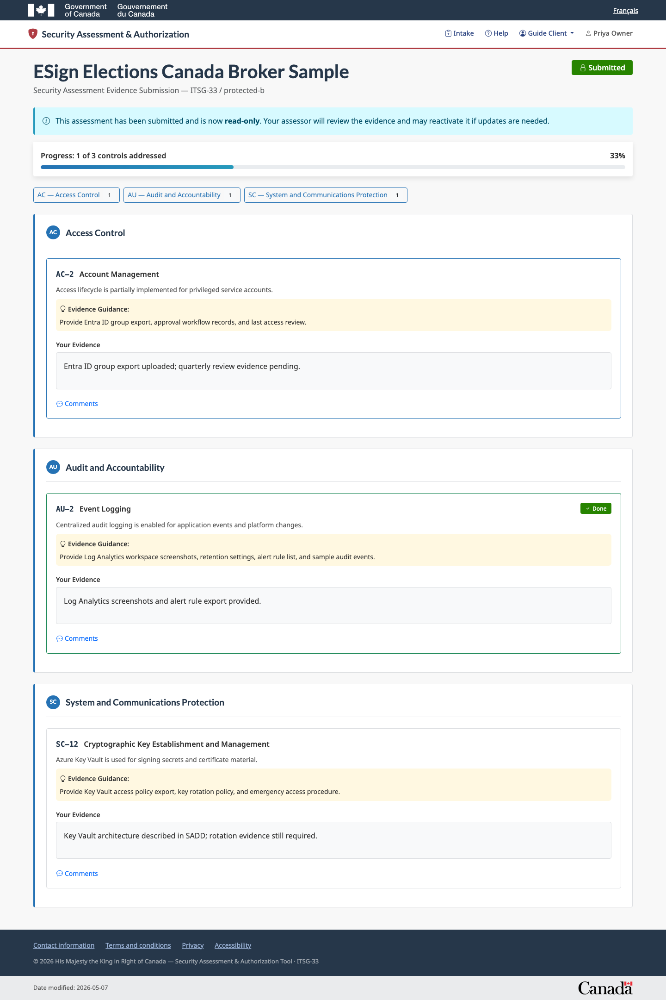
Client evidence portal for assigned controls and evidence responses.
- Open the assessment link or enter the invite code.
- Sign in with the assigned client account.
- Review each control request and evidence guidance.
- Add evidence text, links, exports, screenshots, or document references.
- Save progress as work continues.
- Submit the evidence package when ready for assessor review.
Good evidence is current, dated, clearly named, tied to the system under assessment, and specific about which control it supports.
Page 11
Manage Assessment POA&M Items
POA&M items track findings, owners, due dates, risk, milestones, mitigation, residual risk, and assessor notes.
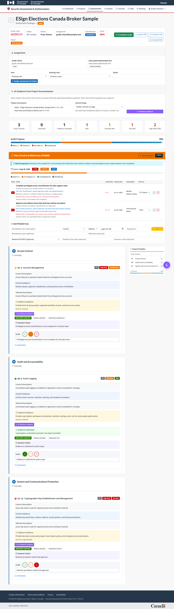
Assessment POA&M table with risk, control, owner, due date, status, and edit/delete actions.
- Open the assessment.
- Scroll to Plan of Action & Milestones.
- Use Auto-Populate to create items from findings or add an item manually.
- Set finding, risk, control, owner, target date, status, mitigation plan, milestones, residual risk, and assessor notes.
- Link the item to an ATO/iATO when it belongs in an authorization package.
- Update status through open, in progress, completed, and verified.
Page 12
Create ATO/iATO Records
ATO/iATO records are editable authorization packages linked to the project and optionally to an assessment.
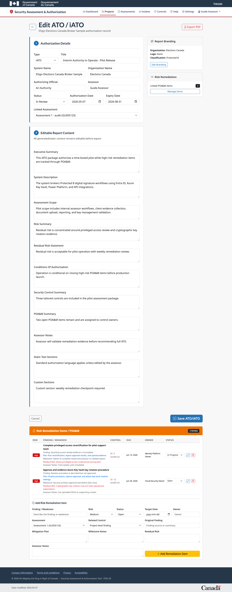
ATO/iATO edit page with authorization metadata and editable report content sections.
- Open the project dashboard.
- Select New ATO or New iATO.
- Link an assessment when the authorization is based on an assessment package.
- Edit title, system details, officials, status, dates, executive summary, system description, assessment scope, risk statements, conditions, security control summary, POA&M summary, notes, static text, and custom sections.
- Save and export when ready.
Page 13
Manage ATO/iATO Risk Remediation
ATO/iATO remediation items can be created, edited, deleted, and included in authorization reports.

ATO/iATO remediation table with add, edit, status update, and delete actions.
- Open the ATO/iATO record.
- Scroll to Risk Remediation Items / POA&M.
- Add a project-level or assessment-linked remediation item.
- Link a control when the item maps to a control finding.
- Set risk, status, target date, owner, original finding, mitigation, milestones, residual risk, and assessor notes.
- Edit or delete items as needed.
Page 14
Export Reports And Browse Controls
Export assessment and authorization outputs, then use the catalog for framework-level control review.
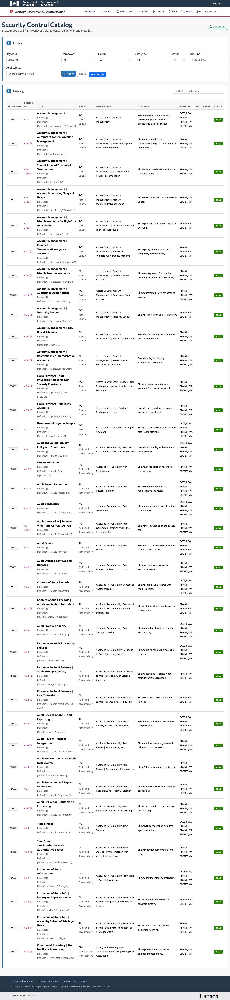
Admin security control catalog with search, filters, metadata, and CSV export.
Export reports
- Use Controls CSV for Excel-compatible review.
- Use Controls PDF for formatted control details.
- Use Full Project PDF for project overview, documents list, assessments, controls, POA&M, and ATO/iATO summary.
- Use Assessment PDF for the security assessment report.
- Use ATO/iATO PDF for the authorization package.
Browse controls
- Open
/admin/security-controls.
- Search by control ID, title, keyword, description, guidance, or definitions.
- Filter by framework, family, baseline, category, applicability, or status.
- Export the filtered catalog to CSV.
Page 15
Help Menu And Troubleshooting
Authenticated assessors and clients can open this guide from the application header.
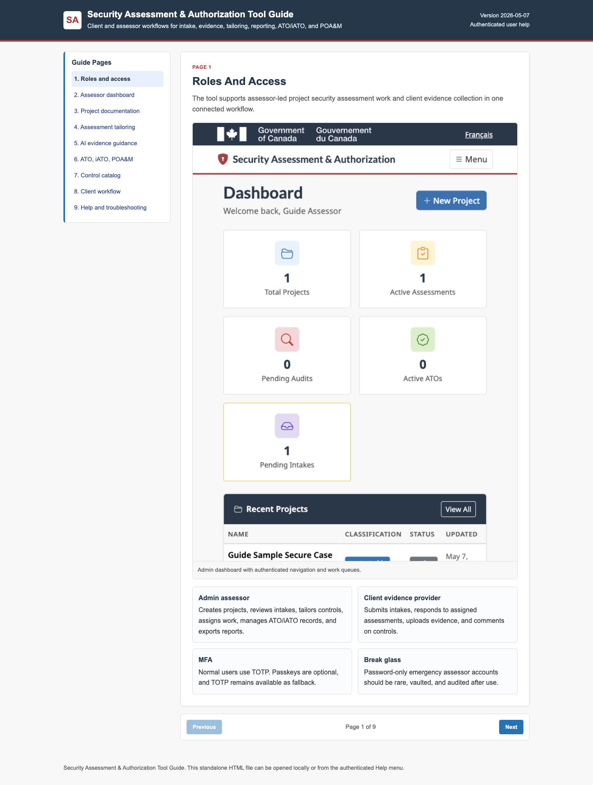
The authenticated Help link opens this paginated guide inside the app.
- Invitation code fails: check spaces, expiry, and invited email address.
- Assigned work is missing: sign in with the exact assigned account.
- TOTP fails: check device time and use the newest code.
- Upload fails: confirm file type and file size.
- AI guidance unavailable: confirm the Anthropic API key is configured.
- PDF export fails: confirm the project has the required assessment, controls, branding, or authorization records.
- POA&M item missing from ATO/iATO: confirm the item is linked to the correct authorization record.